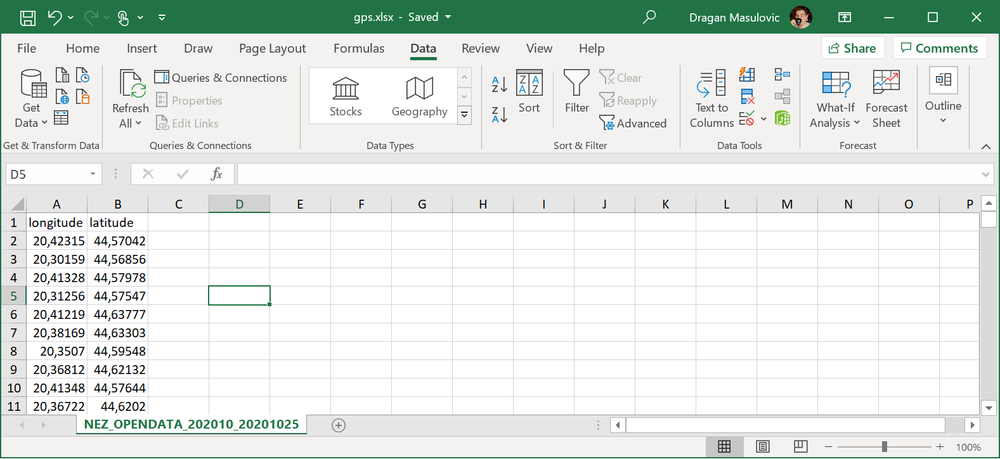
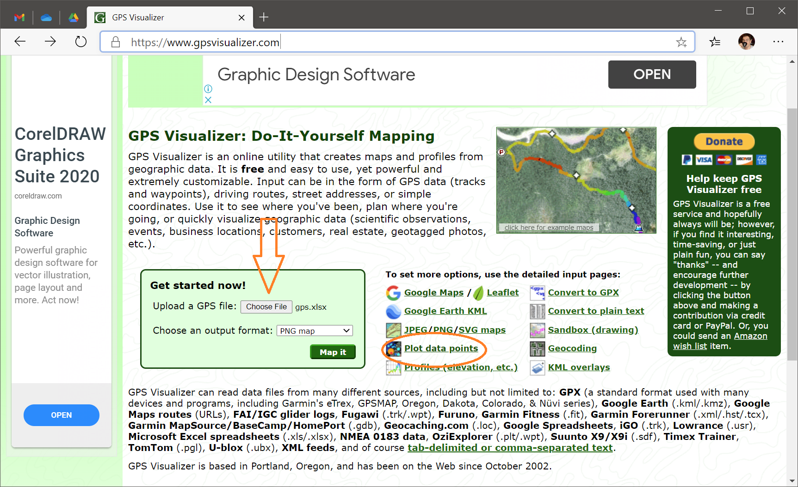

<!DOCTYPE html>
<html xmlns="http://www.w3.org/1999/xhtml" lang=""></html>
  <head>
    <meta charset="utf-8" />
    <meta name="viewport" content="width=device-width, initial-scale=1.0" />
<title>Анализа саобраћајних несрећа &#8212; Petlja - 8</title>
    <link rel="stylesheet" href="_static/pygments.css" type="text/css" />
    <link rel="stylesheet" href="_static/basic.css" type="text/css" />
    <link rel="stylesheet" type="text/css" href="_static/activecode.css" />
    <link rel="stylesheet" type="text/css" href="_static/codemirror.css" />
    <link rel="stylesheet" type="text/css" href="_static/clickable.css" />
    <link rel="stylesheet" type="text/css" href="_static/pytutor.css" />
    <link rel="stylesheet" type="text/css" href="_static/modal-basic.css" />
    <link rel="stylesheet" type="text/css" href="_static/datafile.css" />
    <link rel="stylesheet" type="text/css" href="_static/dragndrop.css" />
    <link rel="stylesheet" type="text/css" href="_static/fitb.css" />
    <link rel="stylesheet" type="text/css" href="_static/matrixeq.css" />
    <link rel="stylesheet" type="text/css" href="_static/parsons.css" />
    <link rel="stylesheet" type="text/css" href="_static/lib/prettify.css" />
    <link rel="stylesheet" type="text/css" href="_static/poll.css" />
    <link rel="stylesheet" type="text/css" href="_static/showEval.css" />
    <link rel="stylesheet" type="text/css" href="_static/tabbedstuff.css" />
    <link rel="stylesheet" type="text/css" href="https://stackpath.bootstrapcdn.com/bootstrap/4.2.1/css/bootstrap.min.css" />
    <link rel="stylesheet" type="text/css" href="_static/video.css" />
    <link rel="stylesheet" type="text/css" href="_static/webgldemo.css" />
    <link rel="stylesheet" type="text/css" href="_static/webglinteractive.css" />
    <link rel="stylesheet" type="text/css" href="_static/karel.css" />
    <link rel="stylesheet" type="text/css" href="_static/notes.css" />
    <link rel="stylesheet" type="text/css" href="_static/simanim.css" />
    <link rel="stylesheet" type="text/css" href="_static/pycode.css" />
    <link rel="stylesheet" type="text/css" href="_static/p5js.css" />
    <link rel="stylesheet" type="text/css" href="_static/gallery.css" />
    <link rel="stylesheet" type="text/css" href="_static/dbDirective.css" />
    <link rel="stylesheet" type="text/css" href="_static/associations.css" />
    <link rel="stylesheet" type="text/css" href="_static/regex-check.css" />
    <link rel="stylesheet" href="_static/user-highlights.css" type="text/css" />
    <link rel="stylesheet" href="https://use.fontawesome.com/releases/v5.1.1/css/all.css" type="text/css" />
    <link rel="stylesheet" href="_static/bootstrap-4.0.0-dist/css/bootstrap.min.css" type="text/css" />
    <link rel="stylesheet" href="_static/flatly.min.css" type="text/css" />
    <link rel="stylesheet" href="_static/petlja-runestone.css" type="text/css" />
    <script id="documentation_options" data-url_root="./" src="_static/documentation_options.js"></script>
    <script type="text/javascript" src="_static/runestonebase.js"></script>
    <script type="text/javascript" src="_static/skulpt.min.js"></script>
    <script type="text/javascript" src="_static/skulpt-stdlib.js"></script>
    <script type="text/javascript" src="_static/jquery.js"></script>
    <script type="text/javascript" src="_static/underscore.js"></script>
    <script type="text/javascript" src="_static/doctools.js"></script>
    <script type="text/javascript" src="_static/language_data.js"></script>
    <script type="text/javascript" src="_static/jquery.highlight.js"></script>
    <script type="text/javascript" src="_static/bookfuncs.js"></script>
    <script type="text/javascript" src="_static/codemirror.js"></script>
    <script type="text/javascript" src="_static/xml.js"></script>
    <script type="text/javascript" src="_static/css.js"></script>
    <script type="text/javascript" src="_static/python.js"></script>
    <script type="text/javascript" src="_static/htmlmixed.js"></script>
    <script type="text/javascript" src="_static/javascript.js"></script>
    <script type="text/javascript" src="_static/jquery_i18n/CLDRPluralRuleParser.js"></script>
    <script type="text/javascript" src="_static/jquery_i18n/jquery.i18n.js"></script>
    <script type="text/javascript" src="_static/jquery_i18n/jquery.i18n.messagestore.js"></script>
    <script type="text/javascript" src="_static/jquery_i18n/jquery.i18n.fallbacks.js"></script>
    <script type="text/javascript" src="_static/jquery_i18n/jquery.i18n.language.js"></script>
    <script type="text/javascript" src="_static/jquery_i18n/jquery.i18n.parser.js"></script>
    <script type="text/javascript" src="_static/jquery_i18n/jquery.i18n.emitter.js"></script>
    <script type="text/javascript" src="_static/jquery_i18n/jquery.i18n.emitter.bidi.js"></script>
    <script type="text/javascript" src="_static/activecode-i18n.en.js"></script>
    <script type="text/javascript" src="_static/activecode.js"></script>
    <script type="text/javascript" src="_static/clike.js"></script>
    <script type="text/javascript" src="_static/timed_activecode.js"></script>
    <script type="text/javascript" src="_static/animationbase.js"></script>
    <script type="text/javascript" src="_static/mchoice.js"></script>
    <script type="text/javascript" src="_static/timedmc.js"></script>
    <script type="text/javascript" src="_static/timed.js"></script>
    <script type="text/javascript" src="_static/mchoice-i18n.en.js"></script>
    <script type="text/javascript" src="_static/clickable.js"></script>
    <script type="text/javascript" src="_static/timedclickable.js"></script>
    <script type="text/javascript" src="_static/d3.v2.min.js"></script>
    <script type="text/javascript" src="_static/jquery.ba-bbq.min.js"></script>
    <script type="text/javascript" src="_static/jquery.jsPlumb-1.3.10-all-min.js"></script>
    <script type="text/javascript" src="_static/pytutor.js"></script>
    <script type="text/javascript" src="_static/codelens.js"></script>
    <script type="text/javascript" src="_static/skulpt.min.js"></script>
    <script type="text/javascript" src="_static/skulpt-stdlib.js"></script>
    <script type="text/javascript" src="_static/datafile.js"></script>
    <script type="text/javascript" src="_static/dragndrop.js"></script>
    <script type="text/javascript" src="_static/timeddnd.js"></script>
    <script type="text/javascript" src="_static/dragndrop-i18n.en.js"></script>
    <script type="text/javascript" src="_static/fitb.js"></script>
    <script type="text/javascript" src="_static/timedfitb.js"></script>
    <script type="text/javascript" src="_static/fitb-i18n.en.js"></script>
    <script type="text/javascript" src="_static/matrixeq.js"></script>
    <script type="text/javascript" src="_static/lib/prettify.js"></script>
    <script type="text/javascript" src="_static/lib/hammer.min.js"></script>
    <script type="text/javascript" src="_static/parsons.js"></script>
    <script type="text/javascript" src="_static/parsons-i18n.en.js"></script>
    <script type="text/javascript" src="_static/timedparsons.js"></script>
    <script type="text/javascript" src="_static/poll.js"></script>
    <script type="text/javascript" src="_static/reveal.js"></script>
    <script type="text/javascript" src="_static/shortanswer.js"></script>
    <script type="text/javascript" src="_static/timed_shortanswer.js"></script>
    <script type="text/javascript" src="_static/showEval.js"></script>
    <script type="text/javascript" src="_static/tabbedstuff.js"></script>
    <script type="text/javascript" src="_static/runestonevideo.js"></script>
    <script type="text/javascript" src="_static/webglinteractive.js"></script>
    <script type="text/javascript" src="_static/FileSaver.min.js"></script>
    <script type="text/javascript" src="_static/Blob.js"></script>
    <script type="text/javascript" src="_static/karelCorner.js"></script>
    <script type="text/javascript" src="_static/karelRobot.js"></script>
    <script type="text/javascript" src="_static/karelWorld.js"></script>
    <script type="text/javascript" src="_static/karelRobotDrawer.js"></script>
    <script type="text/javascript" src="_static/karelUI.js"></script>
    <script type="text/javascript" src="_static/karel.js"></script>
    <script type="text/javascript" src="_static/karel-i18n.en.js"></script>
    <script type="text/javascript" src="_static/notes.js"></script>
    <script type="text/javascript" src="_static/pygamelib-init.js"></script>
    <script type="text/javascript" src="_static/blockly/blockly_compressed.js"></script>
    <script type="text/javascript" src="_static/blockly/blocks_compressed.js"></script>
    <script type="text/javascript" src="_static/blockly/python_compressed.js"></script>
    <script type="text/javascript" src="_static/blockly/msg-sr.js"></script>
    <script type="text/javascript" src="_static/blockpy/utilities.js"></script>
    <script type="text/javascript" src="_static/blockpy/python_errors.js"></script>
    <script type="text/javascript" src="_static/blockpy/ast_node_visitor.js"></script>
    <script type="text/javascript" src="_static/blockpy/abstract_interpreter.js"></script>
    <script type="text/javascript" src="_static/blockpy/pytifa.js"></script>
    <script type="text/javascript" src="_static/blockpy/abstract_interpreter_definitions.js"></script>
    <script type="text/javascript" src="_static/blockpy/python_to_blockly.js"></script>
    <script type="text/javascript" src="_static/blockpy/imported.js"></script>
    <script type="text/javascript" src="_static/blockpy/blocks/class.js"></script>
    <script type="text/javascript" src="_static/blockpy/blocks/comment.js"></script>
    <script type="text/javascript" src="_static/blockpy/blocks/comprehensions.js"></script>
    <script type="text/javascript" src="_static/blockpy/blocks/dict.js"></script>
    <script type="text/javascript" src="_static/blockpy/blocks/if.js"></script>
    <script type="text/javascript" src="_static/blockpy/blocks/io.js"></script>
    <script type="text/javascript" src="_static/blockpy/blocks/lists.js"></script>
    <script type="text/javascript" src="_static/blockpy/blocks/sets.js"></script>
    <script type="text/javascript" src="_static/blockpy/blocks/loops.js"></script>
    <script type="text/javascript" src="_static/blockpy/blocks/parking.js"></script>
    <script type="text/javascript" src="_static/blockpy/blocks/tuple.js"></script>
    <script type="text/javascript" src="_static/blockpy/blocks/turtles.js"></script>
    <script type="text/javascript" src="_static/blockpy/blocks/text.js"></script>
    <script type="text/javascript" src="_static/blockpy-modal.js"></script>
    <script type="text/javascript" src="_static/simanim.js"></script>
    <script type="text/javascript" src="https://cdn.jsdelivr.net/pyodide/v0.16.1/full/pyodide.js"></script>
    <script type="text/javascript" src="_static/pycode.js"></script>
    <script type="text/javascript" src="//toolness.github.io/p5.js-widget/p5-widget.js"></script>
    <script type="text/javascript" src="_static/p5js.js"></script>
    <script type="text/javascript" src="_static/gallery.js"></script>
    <script type="text/javascript" src="_static/dbDirective.js"></script>
    <script type="text/javascript" src="_static/sql.js"></script>
    <script type="text/javascript" src="_static/associations.js"></script>
    <script type="text/javascript" src="_static/associations-i18n.en.js"></script>
    <script type="text/javascript" src="_static/regex-check.js"></script>
    <script type="text/javascript" src="_static/regex-check-i18n.en.js"></script>
    <script async="async" type="text/javascript" src="https://cdnjs.cloudflare.com/ajax/libs/mathjax/2.7.5/latest.js?config=TeX-AMS-MML_HTMLorMML"></script>
    <script type="text/javascript" src="_static/jquery-ui-1.10.3.custom.min.js"></script>
    <script type="text/javascript" src="_static/jquery-fix.js"></script>
    <script type="text/javascript" src="_static/bootstrap-4.0.0-dist/js/bootstrap.min.js"></script>
    <script type="text/javascript" src="_static/bootstrap-4.0.0-dist/js/bootstrap.bundle.min.js"></script>
    <script type="text/javascript" src="_static/bootstrap-sphinx.js"></script>
    <script type="text/javascript" src="_static/waypoints.min.js"></script>
    <script type="text/javascript" src="_static/rangy-core.js"></script>
    <script type="text/javascript" src="_static/rangy-textrange.js"></script>
    <script type="text/javascript" src="_static/rangy-cssclassapplier.js"></script>
    <script type="text/javascript" src="_static/user-highlights.js"></script>
    <script type="text/javascript" src="_static/jquery.idle-timer.js"></script>
    <script type="text/javascript" src="_static/processing-1.4.1.min.js"></script>
    <script type="text/javascript" src="_static/jquery.hotkey.js"></script>
    <script type="text/javascript" src="_static/jquery-migrate-1.2.1.min.js"></script>
    <script type="text/javascript" src="_static/petlja_ruenstone.js"></script>
    <link rel="index" title="Index" href="genindex.html" />
    <link rel="search" title="Search" href="search.html" />
    <link rel="next" title="Ресурси моје школе" href="PP3.html" />
    <link rel="prev" title="Дигитална технологија у мојој школи и пандемија проузрокована вирусом корона" href="PP1.html" />
    <meta charset='utf-8'>
    <meta http-equiv='X-UA-Compatible' content='IE=edge,chrome=1'>
    <meta content='width=device-width, initial-scale=1.0, maximum-scale=1.0, user-scalable=0' name='viewport' />
    <script type="text/javascript">
      eBookConfig = {};
      eBookConfig.host = 'http://127.0.0.1:8000' ? 'http://127.0.0.1:8000' : 'http://127.0.0.1:8000';
      eBookConfig.app = eBookConfig.host + '/runestone';
      eBookConfig.ajaxURL = eBookConfig.app + '/ajax/';
      eBookConfig.course = '8';
      eBookConfig.logLevel = '0';
      eBookConfig.loginRequired = 'false';
      eBookConfig.build_info = "";
      eBookConfig.isLoggedIn = false;
      eBookConfig.useRunestoneServices = false;
      eBookConfig.python3 = true;
      eBookConfig.basecourse = '8';
      eBookConfig.runestone_version = '';
      eBookConfig.imagesDir = '_images/';
      eBookConfig.staticDir = '_static/';
      if (typeof (Sk) != "undefined")
        Sk.imgPath = eBookConfig.imagesDir;
    </script>

  </head><body>


<!-- Begin navbar -->

<nav id="navbar" class="navbar navbar-default navbar-fixed-top" role="navigation">

  <div class="container">

    <div class="navbar-header" style="width: 10%;margin-top: 20px;">
      <button type="button" class="navbar-toggle collapsed" data-toggle="collapse" data-target="#bs-example-navbar-collapse-1">
        <span class="sr-only">Toggle navigation</span>
        <span class="icon-bar"></span>
        <span class="icon-bar"></span>
        <span class="icon-bar"></span>
      </button>
      
    </div>

    <div class="collapse navbar-collapse" id="bs-example-navbar-collapse-1" style="margin-top: 10px; margin-left: 25px;">
      <ul class="nav navbar-nav " style="width: 90%;">
        <li class="active"><a style="text-align: center;" href="./">Приручник за 8. разред за пројектни задатак - анализа података</a></li>
      </ul>
    </div>
  </div>
</nav>


<div class="container col-md-12" id="continue-reading"></div>

<div class="container col-md-8 col-md-offset-2" id="main-content" style="margin-top: 100px;">
  
  <div class="section" id="id1">
<h1>Анализа саобраћајних несрећа<a class="headerlink" href="#id1" title="Permalink to this headline">¶</a></h1>

    <div class="course-box course-box-info">
        <div class="course-content">
            <p>
<p>Колико си безбедан у саобраћају?</p>
<p>Колико су житељи твог краја стабилни возачи?</p>
<p>Где су саобраћајне “црне тачке” у твом крају?</p>
<p>Ниво амбициозности пројекта: * *</p>

    </p></div></div>
<div class="section" id="id2">
<h2>Циљ истраживања<a class="headerlink" href="#id2" title="Permalink to this headline">¶</a></h2>
<p>Безбедност у саобраћају је од пресудног значаја за добробит свих учесника у саобраћају: од пешака
до возача. С друге стране, у нашој земљи често постоје проблеми са одржавањем путева и постављањем саобраћајне сигнализације,
као и са поштовањем Закона о безбедности у саобраћају од стране свих учесника у саобраћају.</p>
<p>Циљ истраживања је да се анализом података о саобраћајним несрећама у последњих пет година
утврди структура саобраћајних несрећа у твом крају и да се идентификују и
визуелизују саобраћајне “црне тачке”.</p>
</div>
<div class="section" id="id3">
<h2>Ресурси и вештине<a class="headerlink" href="#id3" title="Permalink to this headline">¶</a></h2>
<p>За реализацију овог пројектног задатка потребно је:</p>
<ol class="arabic simple">
<li><p>Пет рачунара на којима је инсталиран Microsoft Office</p></li>
<li><p>Прикључак на Интернет</p></li>
<li><p>Штампач</p></li>
</ol>
<p>Реализација овог пројектног задатка укључује следеће активности:</p>
<ol class="arabic simple">
<li><p>Прибављање података са портала отворених података</p></li>
<li><p>Обрада података (MS Excel)</p></li>
<li><p>Вођење евиденције о уложеном времену за потребе самовредновања (Google Documents)</p></li>
<li><p>Израда извештаја (MS Word)</p></li>
<li><p>Израда презентације (MS PowerPoint)</p></li>
</ol>
</div>
<div class="section" id="id4">
<h2>Формирање тима<a class="headerlink" href="#id4" title="Permalink to this headline">¶</a></h2>
<p>Тим треба поделити на следеће радне групе:</p>
<ol class="arabic simple">
<li><p>Радна група за анализу података из 2020. године</p></li>
<li><p>Радна група за анализу података из 2019. године</p></li>
<li><p>Радна група за анализу података из 2018. године</p></li>
<li><p>Радна група за анализу података из 2017. године</p></li>
<li><p>Радна група за анализу података из 2016. године</p></li>
</ol>
</div>
<div class="section" id="id5">
<h2>Прикупљање и обрада података<a class="headerlink" href="#id5" title="Permalink to this headline">¶</a></h2>
<p>На адреси <a class="reference external" href="https://data.gov.rs/sr/">data.gov.rs</a> се налази Портал отворених података Републике Србије на коме
се редовно објављују званични подаци о низу појава у Србији. Између осталог, Министарство унутрашњих послова
редовно објављује податке о саобраћајним несрећама на територији целе државе, организоване по годинама.</p>
<p>Овај <a class="reference external" href="https://data.gov.rs/sr/datasets/podatsi-o-saobratshajnim-nezgodama-po-politsijskim-upravama-i-opshtinama/">ЛИНК</a>
те води директно на званичне податке о саобраћајним несрећама, где се подаци за сваку годину налазе у одговарајућем
Ексел фајлу.</p>
<p>Нека свака радна група треба да преузме податке за своју годину. Свака од преузетих табела има следећу структуру:</p>
<a class="reference internal image-reference" href="_images/PP2-1.png"></a>
<p>Свака радна група треба да издвоји податке за своје окружење (округ, општину, насеље, како се тимови договоре)
и да у облику Ексел табеле приреми анализу о броју саобраћајних несрећа:</p>
<ol class="arabic simple">
<li><p>по месецима (јануар, фебраур, …)</p></li>
<li><p>по данима у недељи (колико је било несрећа понедељком, колико уторком, …)</p></li>
<li><p>у посебнима данима у години (државни празници); ове податке треба упоредити са просечним дневним бројем саобраћајних несрећа на годишњем нивоу</p></li>
<li><p>по врсти (са повредама, само материјална штета, …; обратити пажњу на то да скраћеница SN која је јавља у описима значи “саобраћајна несрећа”)</p></li>
</ol>
<p>Све добијене податке треба илустровати одговарајућим дијаграмима у Екселу.</p>
<p>Да би се идентификовале саобраћајне “црне тачке” свака радна група треба да прикаже податке о локацијама на којима се десила
несрећа на карти. За ову анализу погодно је користити неки од јавно доступних и бесплатних сервиса за приказивање
географских података као што је <a class="reference external" href="https://www.gpsvisualizer.com/">GPS Visualizer</a>.</p>
<p>Уколико се одлучите за коришћење овог сервиса, податке треба прирпремити на следећи начин:</p>
<ol class="arabic simple">
<li><p>направити нову Ексел табелу из које су уклоњене све колоне осим колона које садрже GPS координате саобраћајне несреће</p></li>
<li><p>тако добијеној табели треба додати заглавље које објашњава врсту података у табели: прву колону назвати “longitude” (енгл. географска дужина), а другу “latitude” (енгл. географска ширина)</p></li>
</ol>
<p>Добијена табела треба да изгледа отприлике овако:</p>
<a class="reference internal image-reference" href="_images/PP2-2.png"></a>
<p>Овако припремљену табелу треба послати систему кликом на дугме “Choose file” и онда одабрати сервис “Plot data points” да би
сервис генерисао мапу која сваку локацију чије координате су наведене у Ексел фајлу приказује тачком на мапи:</p>
<a class="reference internal image-reference" href="_images/PP2-3.png"></a>
<p>Када радне групе заврше анализу свака за своју годину, све радне групе заједно анализирају укупан петогодишњи период
и покушавају да утврде</p>
<ol class="arabic simple">
<li><p>да ли постоје обрасци у понашању учесника у саобраћају који се нису променили током ових пет година</p></li>
<li><p>да ли постоје трендови у вези са побољшањем/погоршањем ситуације у саобраћају у окружењу.</p></li>
</ol>
</div>
<div class="section" id="id7">
<h2>Самовредновање<a class="headerlink" href="#id7" title="Permalink to this headline">¶</a></h2>
<p>Током рада на реализацији пројекта сваки учесник пројекта за себе
води дневник у облику <em>дељеног документа у облаку</em> који има следећу структуру:</p>
<div class="highlight-default notranslate"><div class="highlight"><pre><span></span>              <span class="o">|</span> <span class="n">Датум</span> <span class="mi">1</span> <span class="o">|</span> <span class="n">Датум</span> <span class="mi">2</span> <span class="o">|</span> <span class="n">Датум</span> <span class="mi">3</span> <span class="o">|</span> <span class="o">...</span>
<span class="o">-----------------------------------------------------</span>
  <span class="n">Члан</span> <span class="n">тима</span> <span class="mi">1</span> <span class="o">|</span>  <span class="n">време</span>  <span class="o">|</span>         <span class="o">|</span>         <span class="o">|</span> <span class="o">...</span>
<span class="o">-----------------------------------------------------</span>
  <span class="n">Члан</span> <span class="n">тима</span> <span class="mi">2</span> <span class="o">|</span>         <span class="o">|</span>         <span class="o">|</span>         <span class="o">|</span> <span class="o">...</span>
<span class="o">-----------------------------------------------------</span>
  <span class="n">Члан</span> <span class="n">тима</span> <span class="mi">3</span> <span class="o">|</span>         <span class="o">|</span>         <span class="o">|</span>         <span class="o">|</span> <span class="o">...</span>
<span class="o">-----------------------------------------------------</span>
  <span class="o">...</span>         <span class="o">|</span>         <span class="o">|</span>         <span class="o">|</span>         <span class="o">|</span> <span class="o">...</span>
</pre></div>
</div>
<p>У овај документ сваки члан тима уноси податке о томе колико времена је провео на пословима бављења пројектом.</p>
</div>
<div class="section" id="id8">
<h2>Извештавање<a class="headerlink" href="#id8" title="Permalink to this headline">¶</a></h2>
<p>По завршетку анализе података свака радна група припрема извештај о саобраћајним несрећама за своју годину.</p>
<p>Све радне групе припремају заједно још два извештаја:</p>
<ol class="arabic simple">
<li><p>Збирни извештај о анализи петогодишњег периода</p></li>
<li><p>Извештај о самовредновању у коме се анализира колико времена је утрошено на овај посао по ученику и по датуму и подаци се приказују одговарајућим дијаграмима.</p></li>
</ol>
<p>Извештаји о саобраћајним несрећама (за сваку годину посебно и Збирни извештај)
се подносе целом разреду и наставнику који треба да посвети један час њиховој анализи.
Чланови тима треба да прокоментаришу Извештај о самовредновању.
Презентацију резултата пројекта припремити у MS PowerPoint-у.</p>
<p>Извештаји о саобраћајним несрећама (за сваку годину посебно и Збирни извештај) се подносе управи школе са
молбом да се објаве на огласној табли и/или на сајту школе.</p>

    <div class="course-box course-box-info">
        <div class="course-content">
            <p>
<p>Уколико је то могуће у процес сумирања утисака укључити шири круг људи. Рецимо,
презентовати извештај на родитељском састанку, али и изван школе како (ако то прилике допуштају)
би у цео процес била укључена и локална заједница.</p>

    </p></div></div>
</div>
</div>


  
      <div class="col-md-12">
<ul class="pager">
        <li id="relations-prev" title='Previous chapter - Дигитална технологија у мојој школи и пандемија проузрокована вирусом корона' data-toggle="tooltip"><a href="PP1.html">Previous chapter</a></li>
    
        <li id="relations-next" title='Next chapter - Ресурси моје школе' data-toggle="tooltip"><a href="PP3.html">Next chapter</a></li>
</ul>

<!-- <ul class="pager"> -->
    <!-- -->
        <!-- <li id="relations-prev" title='Претходно поглавље - Дигитална технологија у мојој школи и пандемија проузрокована вирусом корона' data-toggle="tooltip"><a href="PP1.html">Претходно поглавље</a></li> -->
    <!--  -->
    <!-- -->
        <!-- <li id="relations-next" title='Следеће поглавље - Ресурси моје школе' data-toggle="tooltip"><a href="PP3.html">Следеће поглавље</a></li> -->
    <!-- -->
<!-- </ul> -->

<script type="text/javascript">

  $('#relations-prev').tooltip({'placement':'right', 'selector': '', 'delay': { show: 100, hide: 50}});
  $('#relations-next').tooltip({'placement':'left', 'selector': '', 'delay': { show: 100, hide: 50}});

</script>
</div>
  
</div>
<footer class="footer col-md-12">
    <div class="container">
        <div class="text-center">
            <hr>
            <p class="text-muted">
                <span class="pull-left">&copy; 2022 Petlja (Created using  <a href="https://pypi.org/project/Sphinx/">Swinx</a>, <a href="http://runestoneinteractive.org/">RunestoneComponents</a> and <a href="https://github.com/Petlja/PetljaDoc">PetljaDoc</a>)</span>
            </p>
        </div>
    </div>
</footer>


<script type="text/javascript">
  var _gaq = _gaq || [];
  _gaq.push(['_setAccount', 'UA-32029811-1']);
  _gaq.push(['_trackPageview']);

  (function() {
    var ga = document.createElement('script'); ga.type = 'text/javascript'; ga.async = true;
    ga.src = ('https:' == document.location.protocol ? 'https://ssl' : 'http://www') + '.google-analytics.com/ga.js';
    var s = document.getElementsByTagName('script')[0]; s.parentNode.insertBefore(ga, s);
  })();
</script>


  </body>
</html>